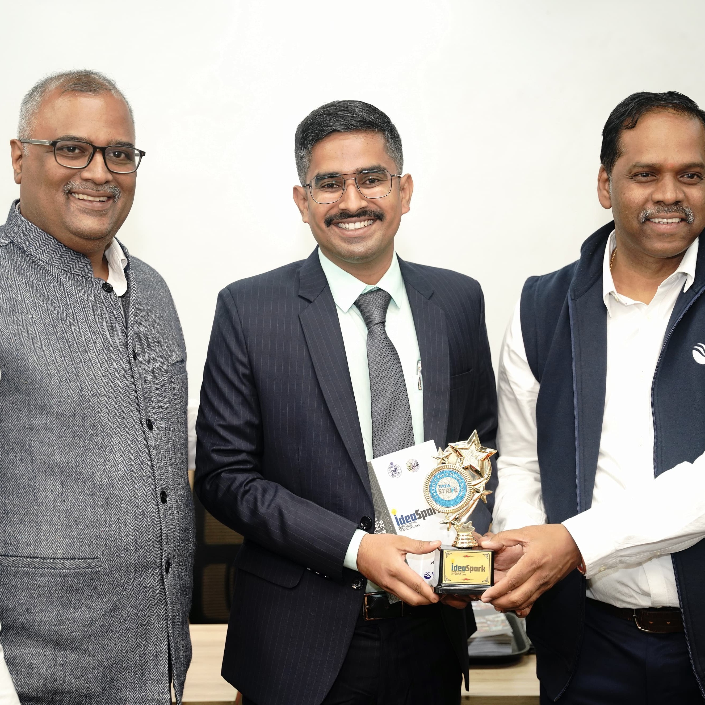

Career & Professional Trajectory
A track record spanning grassroots immersion in the drylands of Rajasthan to state-wide civic campaigns in Bihar and high-stakes district governance in Odisha.
Chief Minister’s Skill Development Fellow (CMSDF)
Department of Skill Development & Technical Education • Dhenkanal, Govt. of Odisha
Steering district-level execution of central and state skilling initiatives. Formulated the Dakhyata Panji live dashboard across 13 line departments; structured the PIA Performance Index tracking 14 agencies; organized 96 on-the-spot job drives delivering 1,803 offers.
Policy Fellow
Citizens for Public Leadership (CPL)
Engaging with senior parliamentarians, civil servants, and policy faculty on institutional bottlenecks in Indian state machinery, generating actionable policy briefs.
Policy Researcher (Diplomacy, Foreign Policy & Geopolitics)
IMPRI (Impact and Policy Research Institute) • New Delhi
Researched the intersection of domestic capacity building and international public diplomacy. Published groundbreaking work on narrative credibility in 21st-century multilateral storytelling.
District & State Civic-Engagement Lead
Jan Suraaj Young Leaders Program • Bhagalpur, Bihar
Mobilized youth leaders and civic volunteers across Bhagalpur division; architected community issue councils and grassroots feedback loops during intense political campaigns.
Independent Policy & Development Research
Pune • Maharashtra & Western India
Field research on administrative decentralization, vocational training drop-out patterns, and localized employment ecosystems.
Gandhi Fellow
Piramal School of Leadership • Jhunjhunu, Rajasthan
2-year full-time immersive fellowship. Collaborated directly with Block and District Education Officers to overhaul classroom pedagogy, school management committees (SMCs), and headmaster capacity.
Recommendations
Yugal Kishor K.
CMSDF Cohort Colleague • Odisha Governance Network
“Hrishikesh possesses a rare ability to translate knotty policy directives into crisp, automated tracking protocols. His systems-level thinking in developing the Dakhyata Panji framework fundamentally shifted how our cohort approaches inter-departmental convergence.”
Recommendation on Systems Thinking • CMSDF Cohort

RJRaman Jeet
Gandhi Fellow Cohort Member • Rural Dev Specialist
“Whether working through sandstorms in Jhunjhunu or navigating high-tempo operations in Bihar and Odisha, Hrishikesh demonstrates an unwavering operational discipline. He doesn't just theorize reform; he stays on the ground until it functions autonomously.”
Recommendation on Operational Consistency • Gandhi Fellowship